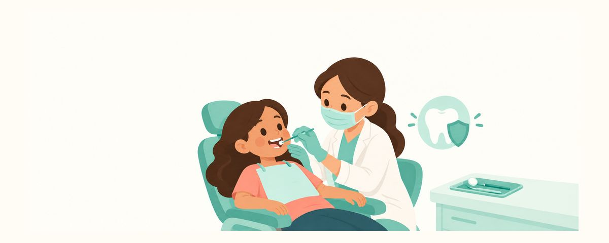

Six-Year Molars Fully In? When to Get Sealants and How to Care for Them
Once the six-year molars are fully in, sealing their grooves is one of the best ways to prevent cavities. When to get sealants, aftercare, and common myths.
At a glance
- Check that all four first molars are fully in
- Get each molar sealed as soon as it's fully in
- Sealants are not a pass on brushing
Once the first permanent molars (the six-year molars) come in, sealants are the next thing to think about. You may have heard the dentist recommend them, but you might wonder what they are exactly, when to get them, and what changes afterward. Here's what parents should know about sealants on permanent molars.
Why seal the permanent molars?
The chewing surface of a permanent molar is full of bumps and grooves, like little hills and valleys. These grooves are narrower and deeper than a toothbrush bristle, so no matter how carefully you brush, you can't reach the bottom. That's why molar cavities so often start in these grooves.
Sealants (pit-and-fissure sealants) cover these grooves with a thin layer of resin so food and bacteria can't get in. The American Dental Association and the American Academy of Pediatric Dentistry recommend them, and they've been shown to greatly reduce chewing-surface cavities. They're one of the most effective ways to prevent cavities in molars.
Sealants matter most on newly erupted molars. The six-year molars have to last a lifetime, yet they sit at the very back, where kids have the hardest time brushing on their own. Once a cavity starts, it often means repeated treatment, so it's best to seal the grooves before a cavity forms.
The right time is after the molar is fully in. If gum tissue still covers part of the chewing surface, the whole groove can't be sealed. The four molars often don't come in at the same time, so seal each one as soon as it's fully in. If the molars come in late, the sealants can simply wait until they do. Later, when the second permanent molars come in behind them, those can be sealed the same way.
Getting sealants, and caring for them afterward
- Have the dentist confirm that all four first permanent molars are fully through the gums.
- Get sealants on each molar as soon as it's fully in. It's a short procedure with no numbing: the tooth is cleaned and the sealant is painted on, so most kids handle it well.
- Before the visit, explain it in a short, easy way, like "The dentist is going to paint a thin shield on your back teeth."
- Right after a sealant, the bite may feel a little high. That usually settles within a few days. If it doesn't, the dentist can smooth it.
- At every checkup, have the sealants checked for chips or loss, and reapplied if needed.
The most common myth is "Sealants are done, so no more cavity worries." Sealants only cover the grooves on the chewing surface. They don't cover the sides of the teeth or the spaces between them. So keep brushing and flossing just as before, with a pea-sized amount of fluoride toothpaste. Keep the habit of giving snacks and sweet drinks only at set times, too.
Another myth is "There's no cavity yet, so we can do it later." Sealants are a preventive treatment for healthy molars without cavities, so the best time is before a cavity ever starts.
United States guidance
US: School sealant programs
The CDC supports school-based sealant programs, and many elementary schools offer sealants free or at low cost. Look for a notice from the school or contact your local health department. If you have dental insurance, children's sealants are usually covered as a preventive service.
Frequently asked questions
Do sealants mean no cavities at all?
They greatly reduce cavities on the chewing surface, but they can't prevent cavities on the sides or between teeth. Brushing, flossing, and watching snacks are still needed.
What if a sealant comes off?
Chewing forces can wear away part of a sealant. The dentist will check at every visit and reapply it if needed.
Do sealants hurt?
It's a short procedure with no numbing, where the tooth is cleaned and the sealant is painted on, so it usually doesn't hurt. For most kids, the hardest part is keeping the mouth open and waiting a bit. It helps to have them silently count through a favorite song during the procedure, or to agree ahead of time on something fun to do afterward.
Should baby molars get sealants too?
Whether to seal baby molars is up to the dentist, based on your child's cavity risk. On permanent molars, the benefits are well established, so it's recommended to get them sealed without delay once they're fully in.
The grooves already look brown. Can a sealant fix that?
If a groove already looks brown, the tooth may need a different treatment instead of a sealant. Don't wait for the next checkup. Have it looked at soon.
When to see the dentist
- The six-year molars are fully in, and you haven't talked about sealants yet
- The grooves on a molar look brown or black
- A sealant seems to have come off, or the surface feels rough
- The bite still feels high several days after a sealant
- Food often gets stuck in a molar, or your child has pain when chewing
Get these at the right time
Enter your child's birth date (or due date) in the Tooth Calendar app and these articles arrive as reminders when they matter. Free, no sign-up.
Sources
The information in this app is for general educational purposes and does not replace professional dental care. Talk to a dentist about your child's condition.